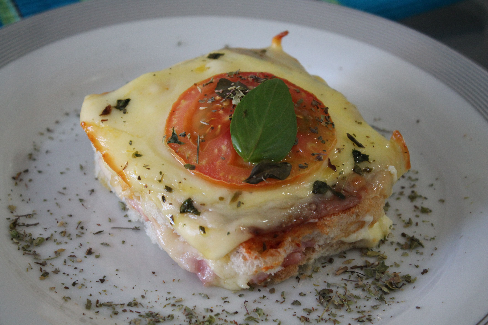

LANCHES

Misto quente de Forno
- ⮩ INGREDIENTES:
- • Margarina para untar
- • 12 Fatias de pão de forma (sem a casca)
- • 1/2 Lata de molho de tomate pronto
- • 6 Fatias de presunto (ou a gosto)
- • 4 Colheres de sopa de requeijão
- • 12 Fatias de mussarela (ou a gosto)
- • 1/2 Caixa de creme de leite
- • 1 Tomate grande cortado em rodelas
- • Orégano a gosto
- ⮩ MODO DE PREPARO:
- • Unte um refratário com margarina.
- • Forre o fundo com 6 fatias de pão de forma.
- • Colocar metade do molho de tomate temperado, presunto, camada de requeijão, metade da mussarela,
restante do pão de forma, molho de tomate, creme de leite, mussarela, tomate em rodelas, orégano. - • Leve o refratário ao forno até a mussarela derreter (fiz no micro-ondas)
Biscoito de Polvilho Doce
- ⮩ INGREDIENTES:
- 500 g de polvilho doce
- 1 xícara de farinha de trigo
- 250 g de margarina
- 1 xícara (chá) de açúcar
- 1 colher (café) de fermento em pó
- 2 ovos
- Opcional - 100g de coco ralado
- ⮩ MODO DE PREPARO:
- Misture todos os ingredientes.
- Modele no formato que quiser.
- Coloque no forno médio, pré-aquecido, até dourar por baixo no biscoito.